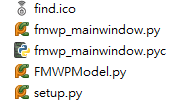
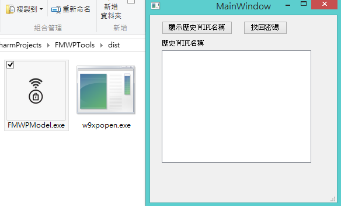

Python - 使用 PyQt 與 py2exe 製作 GUI 視窗應用程式的 exe 執行檔
Posted on Sun 04 January 2015 in Python
前言
在前一篇 Python - 使用 py2exe 製作 Python exe 執行檔 介紹了製作 exe 與初步認識，但是今天如果要製作的檔案是 GUI 執行檔，可就需要再修改了，此篇介紹如何產生 GUI 視窗程式用的 exe 執行檔，透過 PyQt 開發的視窗應用程式做一個基本的 exe 製作
Python 環境
我所使用的環境如下：
- Windows 8.1 x64
- Python 2.7.9 32bit
- PyQt4-4.11.3-gpl-Py2.7-Qt4.8.6-x32
- py2exe-0.6.9.win32-py2.7
使用 PyQt 製作 GUI 視窗的 setup.py
以下我以這隻協助尋找 Windows 上連線並儲存過 WiFi 密碼的尋找程式 - PyQt-FMWPTools 為例。
我需要製作成可執行檔的檔案名稱叫做 FWMPModel.py，而我會另外 import 同在 FWMPModel.py 路徑資料夾下的 fmwp_mainwindow.py.
fmwp_mainwindow.py 此檔案是 Qt 的 ui 檔，經過 PyQt 的轉換指令產生的 .py 檔案，檔案位在 FWMPTools 資料夾下，如下圖：

需要改變的地方有：
1. 把 console 改成 windows 程式
把原本的 console 改成 windows 後則不會有命令提示字元出現，而是只剩下程式本身的視窗，否則視窗與命令提示字元都會出現
2. 使用 PyQt 製作的 GUI 程式需要 sip 這個模組
要製作 PyQt 開發的程式需要 sip 這個模組。 在 Wiki 的 PytQt 中有提到 SIP 為是一個自動為 C 和 C++ 庫生成 Python 擴充功能模組的工具。 為了方便開發 PyQt，SIP 於 1998 被「Riverbank Computing」公司創造出來。不過，SIP 不專用於 PyQt，而是適用於所有的 C 和 C++庫 ( 其他介紹可以參考 PyQt 網站與 PyPI )。
所以 SIP 可以說是 PyQt 的底層，沒有這隻檔案便無法製作 exe 執行檔。不過我們不需要另外下載，因為 SIP 已經包含在 PyQt 中，我們只需要在 setup.py 中把它放到 includes 參數。
3. 加入打包的其他引入 Python 檔案
因為我有在 FMWPModel.py 中透過 import 加入視窗的 UI 定義檔案 fmwp_mainwindow.py，因此也需要把此檔案加入至 includes 中。 includes 只需要加入所有打包檔需要的其他 module 檔案即可，並且只需標示名稱 - list of module names to include 。
所以 setup.py 如下:
from distutils.core import setup
import py2exe
setup(
options = {'py2exe': {
'bundle_files': 1,
'compressed': True,
"includes" : ['sip','fmwp_mainwindow']
}},
windows = [{'script': 'FMWPModel.py',"icon_resources": [(1, "find.ico")]}],
zipfile = None
)
結果畫面 :
